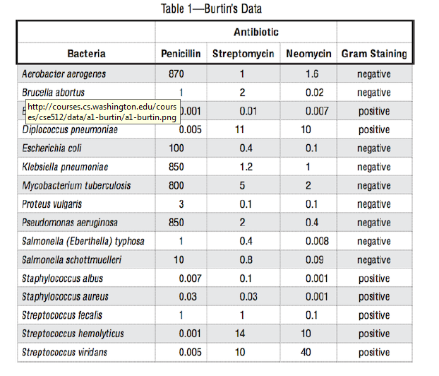
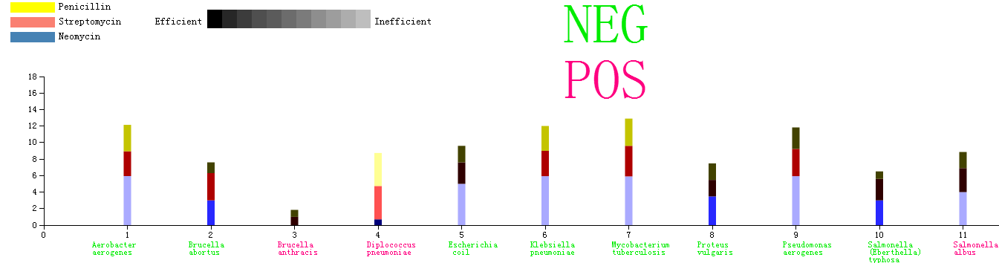

The Data Set Need to be Visualized

The display of the Visualization("ctrl+scroll" to moderate the scale)

The idea of the design of the Assignment
The idea of the design of the Assignment
1:The predealing of the data:logD and devide the dataset into three equivalent classes:
class1:-3~-1(0.001-0.1)
class2:-1~1(0.1-10)
class3:1~3(10-1000)
2:The color is the key of the project because color can be more directed perceived(which is the purpose of the Visualization) than the length or size.In order to achieve this goal,I set a two demensional linear structure for the color
2.1:Map the class1 to the deepest color and the class3 to the most shallow color
2.2:The deeper the color,the more efficient the drug(Take class1 for the example,"0.01" is in this class which denote the remanent germ.So if the effect of the drug is in the class3,the drug is more efficient since that the remanent germ is fewer
2.3:In a word,The color blue,red yellow denote the kind of drug,while the axis-x denote the kind of germ,the depth of color denotes the remanent of the germ(efficiency)
3:The color the the subscrpt below the axis-x denote the effect is negative or positive(The amout of germ compared with that of before using the drug )